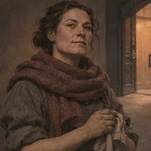

Лидия Орлова
плут 3 · ОЗ 24 · КД 13 · Скорость 30 фтНезависимая составительница жалоб
Тёмное пальто с заменённой пуговицей, аккуратные поля в любом блокноте.
Вы обещали проверить, почему в заводской сводке не осталось места для отдельных людей.
Открыть фигурку для поля
Оружие и заклинания
Оружие · Боевой посох
Тимур Савин
жрец 3 · ОЗ 24 · КД 11 · Скорость 30 фтПомощник амбулатории и представитель пациентов
Хорошо выстиранный жилет, мягкая папка вместо врачебного саквояжа.
Знакомая работница попросила вас сопровождать её на беседе, где каждое слово становится чужой записью.
Открыть фигурку для поля
Оружие и заклинания
Оружие · Боевой посох

Марта Кедрова
воин 3 · ОЗ 31 · КД 11 · Скорость 30 фтБывшая бригадирка и организатор собраний
Широкий шарф, рабочие руки, привычка оставлять проход к двери свободным.
Вы знаете цену пропущенной смены и хотите, чтобы расследование слышало тех, кто боится потерять заработок.
Открыть фигурку для поля
Оружие и заклинания
Оружие · Боевой посох
Олег Берест
волшебник 3 · ОЗ 20 · КД 12 · Скорость 30 фтСчётчик товарных партий
Очки в потёртой оправе и короткий карандаш, который всегда заточен с одной стороны.
Вам показали таблицу, где итог выглядит безупречно, а строки не сходятся с жизнью.
Открыть фигурку для поля
Оружие и заклинания
Оружие · Боевой посох
Адина Горина
плут 3 · ОЗ 24 · КД 13 · Скорость 30 фтФотографка технических каталогов
Складная камера в холщовом футляре, рукава всегда закатаны на одинаковую высоту.
Родственник погибшего попросил сделать опись вещей, прежде чем их вернут заводу.
Открыть фигурку для поля
Оружие и заклинания
Оружие · Боевой посох
Роман Седов
воин 3 · ОЗ 31 · КД 11 · Скорость 30 фтКурьер городских мастерских
Высокие ботинки, пустая сумка через плечо, привычка повторять имя адресата вслух.
Одна потерянная расписка уже стоила вам работы; теперь вы помогаете людям сохранять подтверждения передачи.
Открыть фигурку для поля
Оружие и заклинания
Оружие · Боевой посох
Зоя Крестова
жрец 3 · ОЗ 24 · КД 11 · Скорость 30 фтПосредница бытовых и трудовых споров
Серое платье, несколько простых карандашей для тех, кто предпочитает написать ответ.
Вас пригласили на собрание, где люди должны решить, какие обещания вообще можно принять.
Открыть фигурку для поля
Оружие и заклинания
Оружие · Боевой посох
Ян Лужин
волшебник 3 · ОЗ 20 · КД 12 · Скорость 30 фтЧертёжник промышленных каталогов
Тубус с чистыми листами, чернильное пятно на внутренней стороне ладони.
Вы можете читать заводские схемы, но пришли узнать, кто отвечает за решения между линиями чертежа.
Открыть фигурку для поля
Оружие и заклинания
Оружие · Боевой посох